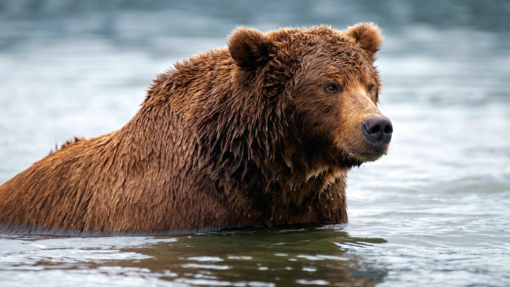

Brown Bear
-
Scientific name: Ursus arctos
Status: Least Concern
Weight: 80 – 600 kg (Adult)
Size: 70 – 150 cm (Adult, At Shoulder)
Population: Around 500–750
Habitat: The Himalayan brown bear have been observed in southern and western Ladakh, in the upper Suru and Zanskar valleys.
Diet: The Himalayan brown bear is primarily a plant-eater with 90% of its food consisting of fruits, figs, leaves, and grass. It also eats fish, rodents, and insects.
Range: The Himalayan brown bear in India is found through the Western Himalayan states of Jammu & Kashmir, Himachal Pradesh, and Uttarakhand at alleviation of 3000-5000 m.